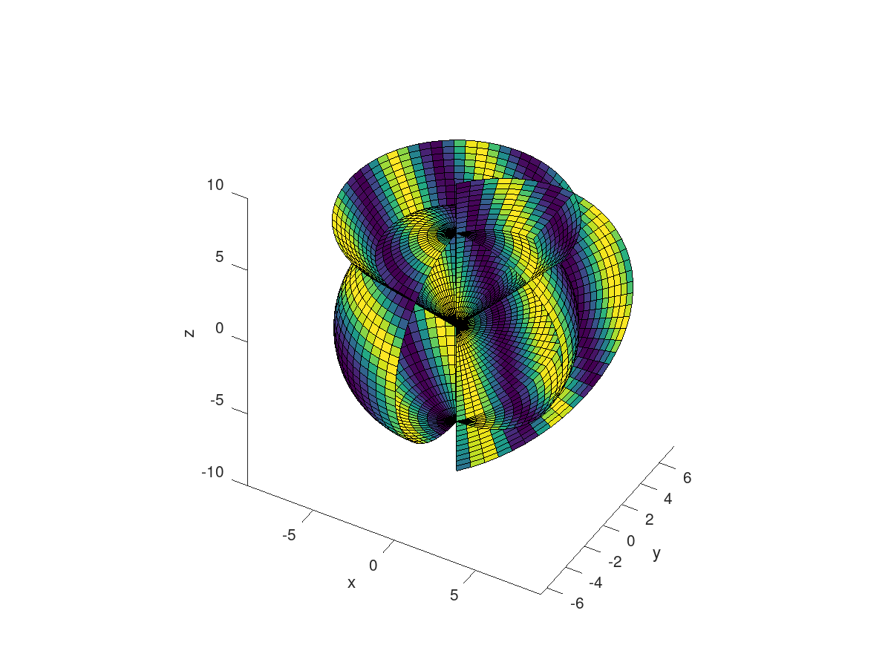
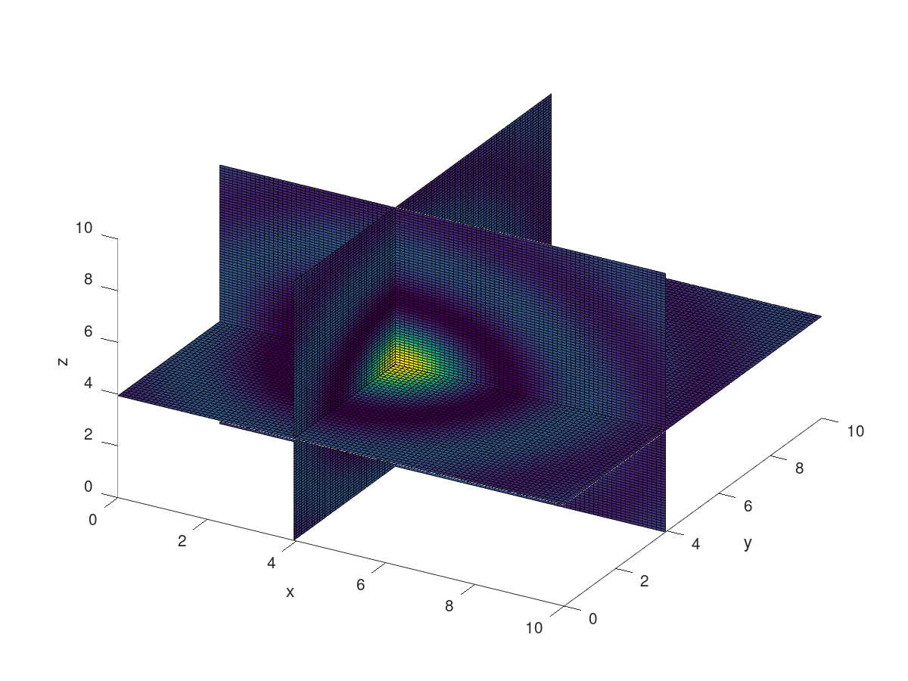

Acoustics
Table of Contents
1 Overview
2 Velocity
The velocity of a soundfield is described by a vector. If described
using spherical coordiates, often the radial component is
relevant. The function radial_weight is a helper function to
calculate the radial portion of a soundfield when a plane wave
pressure is given.
function G_DL = radial_weight(vk_D, vr_dir_L) % radial_weight - % % G_D = radial_weight(vk_D, vr_dir) % % INPUTS % vk_D - vector object containing direction values % vr_dir - vector with spatial direction/orientation of receiver % % OUTPUTS % G_D - matrix % % DESCRIPTION % % %% unit vector vr_dir_L = normalize(vr_dir_L); r_dir_xyz_L = get(vr_dir_L, 'cartesian'); % got cartesian values L = size(r_dir_xyz_L, 2); %% directions k_rtp_D = get(vk_D, 'spherical'); % got spherical values D = size(k_rtp_D, 2); % direction G_DL = zeros(D, L); for l = 1:L for d = 1:D theta = k_rtp_D(2, d); phi = k_rtp_D(3, d); G_DL(d, l) = ... (r_dir_xyz_L(1, l) * sin(theta) * cos(phi) + ... r_dir_xyz_L(2, l) * sin(theta) * sin(phi) + ... r_dir_xyz_L(3, l) * cos(theta)); end end
%% 2-sphere A = 30; theta_A = linspace(0, pi, A); B = 40; phi_B = linspace(0, 2*pi, B); vg_AB = vectorgrid(1, theta_A, phi_B, 'spherical'); vk_D = vector(reshape(vg_AB, [A*B, 1]), 'spherical'); % direction of sensor vr_dir = vector([1, 1, 5]', 'cartesian'); G_D = radial_weight(vk_D, vr_dir); G_AB = reshape(G_D, [A, B]); surface(vg_AB, abs(real(G_AB')), [], 'dependendSurface'); xlabel('x'); ylabel('y'); zlabel('z'); axis('equal'); grid('on'); view([30, 40]); saveas(1, S_file); ans = S_file;
3 Acoustic Waves
The calculation of acoustic waves is greatly facilitated by booast. Plane waves, cylindrical waves and spherical waves are all defined in \(\mathbb R^3\).
3.1 Planewave
A plane wave is described by \[p(\vec r, \vec k) = \mathrm e^{\mathrm i \vec r^T \, \vec k}.\] The implementation using booast is straight forward.
The calculation of pressure \(p\) depends on location vector \(\vec r\) and wave number vector \(\vec k\). Both vectors may be arrays of vectors.
3.1.1 Syntax
p_CABFD = planewave(vr_CAB, vk_FD)
3.1.2 Description
p_CABFD = planewave(vr_CAB, vk_FD) returns a matrix containing
pressure values according to a plane wave.
- vrCAB
- The observation points
vr_CABare an array ofvectorswith dimensionsC,AandB. - vkFD
- The wavenumber vectors
vk_FDmay containFdifferent values for frequency andDdirections.
Accordingly, p_CABFD is defined for 5 dimensions.
3.1.3 Definition
function p_CABFD = planewave(vr_CAB, vk_FD) %% allocate memory Dim_r = size(vr_CAB); Dim_k = size(vk_FD); R = prod(Dim_r); K = prod(Dim_k); p_RK = zeros(R, K); %% Vectors in cart. coord.: r_xyz_R = get(vr_CAB, 'cartesian', [3, R]); k_xyz_K = get(vk_FD, 'cartesian', [3, K]); %% pressure: for r = 1:R for k = 1:K p_RK(r,k) = exp(i*(k_xyz_K(:, k).' * r_xyz_R(:, r))); end end p_CABFD = reshape(p_RK, [Dim_r, Dim_k]); end
3.1.4 Interface test internal
%% Wellenzahl F0 = 1000; omega0 = 2*pi*F0; C_snd = 342; k0 = omega0 / C_snd; %% Richtungen/Wellenzahlvektor vk = vector(k0*ones(3,8,9), 'cartesian'); %% Beobachtungspunkte vr = vector(ones(3, 5, 4), 'cartesian'); %% Druck einer ebenen Welle p = planewave(vr, vk); size(p)
| 5 | 4 | 8 | 9 |
3.1.5 Examples
- Plane wave defined on cartesian coordinates
A
vectorgridis set up using three vectorsx_A, x_Bandx_C. For visualisation, certain slices of this vectorgridg_ABCare selected. The selected slices are used for pressure calculation, the resulting scalar arrays are shown using thesurfacecommand.%% create observation grid (cartesian volume) x_A = linspace(0, 10, 60); y_B = linspace(0, 10, 30); z_C = linspace(0, 10, 40); g_ABC = vectorgrid(x_A, y_B, z_C, 'cartesian'); %% slice some planes for visualisation g_AB1 = g_ABC(:,:,1); g_A1C = g_ABC(:,20,:); g_1BC = g_ABC(10,:,:); %% direction/wavenumbervector of planewave v = vector([1, 1, 0.1]', 'cartesian'); p_AB1 = planewave(vector(g_AB1), v); p_A1C = planewave(vector(g_A1C), v); p_1BC = planewave(vector(g_1BC), v); %% visualise figure(1); clf; hold('on'); surface(g_AB1, real(p_AB1)); surface(g_A1C, real(p_A1C)); surface(g_1BC, real(p_1BC)); xlabel('x'); ylabel('y'); zlabel('z'); view(30,40);
Figure 1: Example plane wave defined in cartesian coordinates.
- Plane wave defined on spherical coordinates
The example given above can also be calculated on a vectorgrid using vectors
r_A,theta_B, andphi_Cdescribing the axes of a spherical coordinate systeme. Slicing this kind of grid yields a surface of a sphere, a cone, or a half circle respectively.%% create observation grid (cartesian volume) A = 30; B = 40; C = 50; r_A = linspace(0, 10, A); theta_B = linspace(0, pi, B); phi_C = linspace(0, 1.5*pi, C); g_ABC = vectorgrid(r_A, theta_B, phi_C, 'spherical'); %% slice some planes for visualisation g_AB1 = g_ABC(:,:,10); % circle g_A1C = g_ABC(:,10,:); % conus g_1BC = g_ABC(20,:,:); % sphere %% direction/wavenumbervector of planewave v = vector([1, 1, 0.3]', 'cartesian'); p_AB1 = real(planewave(vector(g_AB1), v)); p_A1C = real(planewave(vector(g_A1C), v)); %% visualise p_1BC = real(planewave(vector(g_1BC), v)); figure(1); clf; surface(g_AB1, p_AB1); surface(g_A1C, p_A1C); surface(g_1BC, p_1BC); xlabel('x'); ylabel('y'); zlabel('z'); view(30,40); axis('equal');

Figure 2: Example plane wave defined in spherical coordinates.
3.2 Sphericalwave
Die \textsc{Green}sche Funktion \(G(\mathbf r|\mathbf r_s)\) für das Freifeld beschreibt das Schallfeld für eine Punktquelle an der Stelle \(\mathbf r_s = (r_s, \theta_s, \phi_s)\) . Es ist
\begin{equation} \label{eq:G} G(\vec r|\vec r_s) = \frac{e^{\mathrm i\, k |\vec r-\vec r_s|}}{4\pi |\vec r-\vec r_s|} \end{equation}Pressure \(p\) is then \[ p(\vec r, \vec r_s, k, Z_0) = -\mathrm i \, Z_0 \, G(\vec r|\vec r_s).\]
3.2.1 Function definition
function p_CABSF = sphericalwave(vr_CAB, vs_S, k_F, Z0) %% detect input args if nargin < 4 Z0 = 1; end %% allocate memory Dim_r = size(vr_CAB); Dim_s = size(vs_S); R = prod(Dim_r); S = prod(Dim_s); F = numel(k_F); p_RSF = zeros(R, S, F); %% Vectors in cart. coord.: r_xyz_R = get(vr_CAB, 'cartesian', [3, R]); s_xyz_S = get(vs_S, 'cartesian', [3, S]); %% Green for r = 1:R for s = 1:S %% rel. Abstand r_os = sqrt(sum((r_xyz_R(:,r) - s_xyz_S(:,s)).^2)); for f = 1:F %% Vorfaktor mal Green'sche Funktion if r_os != 0 p_RSF(r,s,f) = -i * Z0 * k_F(f) * ... exp(i * k_F(f) * r_os) / (4*pi * r_os); else p_RSF(r,s,f) = NaN; %-i * Z0 * k_F(f); % tdb: lies Williams end end end end %% reshape output p_CABSF = reshape(p_RSF, [Dim_r, Dim_s, F]);
3.2.2 Examples
- Simple cartesian grid
%% Beobachtungspunkte X = 40; x_X = linspace(0, 10, X); Y = 40; y_Y = linspace(0, 10, Y); Z = 1; z_Z = 0; gr = vectorgrid(x_X, y_Y, z_Z, 'cartesian'); vr = vector(gr); %% Wellenzahlen F0_F = linspace(100,100, 1); omega0_F = 2*pi*F0_F; C_snd = 342; k_F = omega0_F / C_snd; %% Quellpositionen vs = vector([0, 5, 0]', 'cartesian'); %% akustische Impedanz Z = 1; %% Druck einer ebenen Welle p = sphericalwave(vr, vs, k_F, Z); %% malen nach Zahlen surface(gr, real(p));
Figure 3: Spherical waves calculated on a cartesian grid.
- Example using several planes
Here we go again
%% create observation grid (cartesian volume) x_A = linspace(0, 10, 50); y_B = x_A; z_C = x_A; g_ABC = vectorgrid(x_A, y_B, z_C, 'cartesian'); %% slice some planes for visualisation g_AB = g_ABC(:,:,1); g_AC = g_ABC(:,10,:); g_BC = g_ABC(10,:,:); %% source position vs = vector([1, 1, 1]', 'cartesian'); %% wave number F0_F = linspace(100,100, 1); omega0_F = 2*pi*F0_F; C_snd = 342; k_F = omega0_F / C_snd; %% acoustical impedance Z = 1; %% visualise figure(1); clf; surface(g_AB, real(sphericalwave(vector(g_AB), vs, k_F, Z))); surface(g_AC, real(sphericalwave(vector(g_AC), vs, k_F, Z))); surface(g_BC, real(sphericalwave(vector(g_BC), vs, k_F, Z))); xlabel('x'); ylabel('y'); zlabel('z'); view(30,40);

Figure 4: Spherical waves on 3 planes defined in cartesian coordinates.